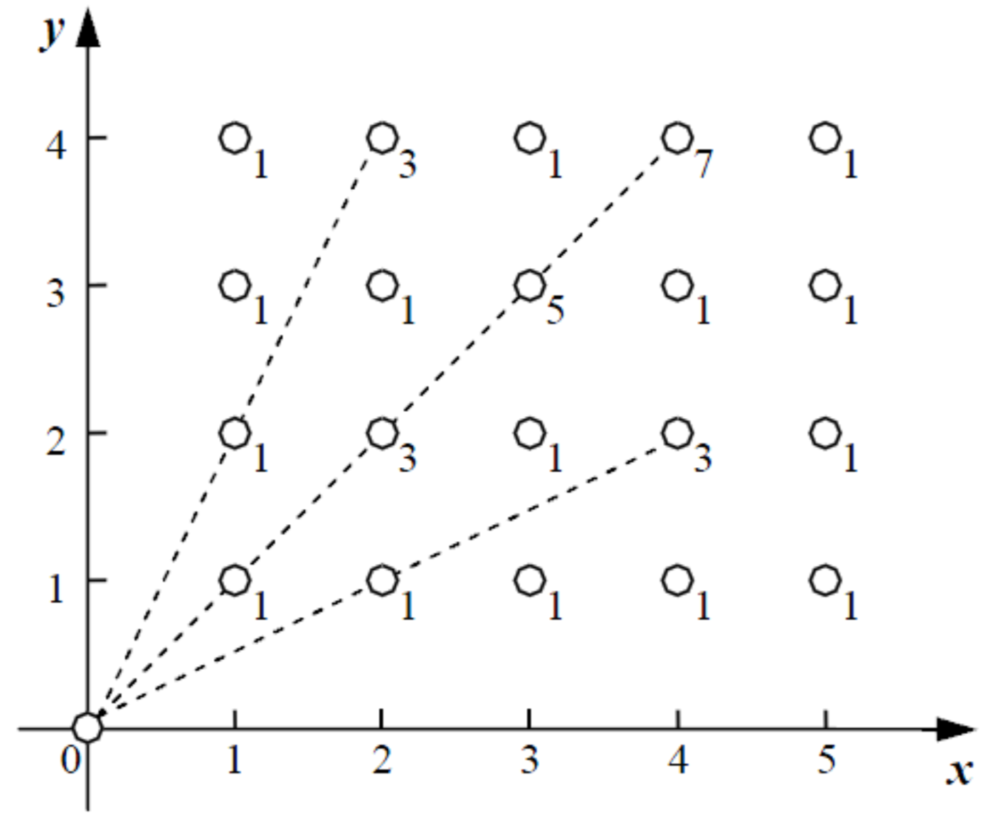

栋栋有一块长方形的地，他在地上种了一种能量植物，这种植物可以采集太阳光的能量。在这些植物采集能量后，栋栋再使用一个能量汇集机器把这些植物采集到的能量汇集到一起。
栋栋的植物种得非常整齐，一共有$n$列，每列有$m$棵，植物的横竖间距都一样，因此对于每一棵植物，栋栋可以用一个坐标($x, y$)来表示，其中$x$的范围是1至$n$，表示是在第$x$列，$y$的范围是1至$m$，表示是在第$x$列的第$y$棵。
由于能量汇集机器较大，不便移动，栋栋将它放在了一个角上，坐标正好是(0, 0)。能量汇集机器在汇集的过程中有一定的能量损失。如果一棵植物与能量汇集机器连接而成的线段上有$k$棵植物，则能量的损失为$2k + 1$。例如，当能量汇集机器收集坐标为(2, 4)的植物时，由于连接线段上存在一棵植物(1, 2)，会产生3的能量损失。注意，如果一棵植物与能量汇集机器连接的线段上没有植物，则能量损失为1。现在要计算总的能量损失。
下面给出了一个能量采集的例子，其中$n = 5，m = 4$，一共有20棵植物，在每棵植物上标明了能量汇集机器收集它的能量时产生的能量损失。

在这个例子中，总共产生了36的能量损失。
仅包含一行，为两个整数n和m。
仅包含一个整数，表示总共产生的能量损失。
5 4
36
3 4
20
【数据规模和约定】
对于10%的数据：1 ≤ n, m ≤ 10;对于50%的数据：1 ≤ n, m ≤ 100;对于80%的数据：1 ≤ n, m ≤ 1000;对于90%的数据：1 ≤ n, m ≤ 10,000;对于100%的数据：1 ≤ n, m ≤ 100,000。
 Comet OJ
Comet OJ